Tu Jellyfin,
como una rockola
Un reproductor para la música de tu propio servidor: mezclas del día que aprenden de lo que escuchas, una radio con locutora, letras sincronizadas y un visualizador como el de antes. En el iPhone, en Windows, en el navegador y en la terminal.
Tu biblioteca, ordenada por lo que te gusta
Rockola arma mezclas con los géneros, las décadas y los artistas que tienes, y las inclina hacia lo que más escuchas. Son las mismas todo el día; mañana, otras.
- «Lo más tuyo», de tu artista más escuchado.
- «Lo que casi no tocas», para redescubrir.
- Cada escucha cuenta en Jellyfin, desde cualquier plataforma.
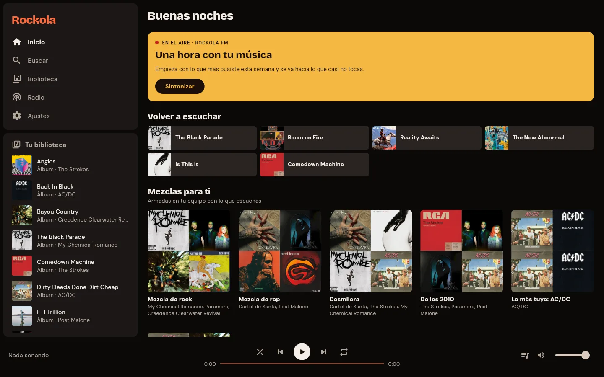
Una radio con locutora
Una hora de radio hecha con tus mezclas. Cada pocas canciones, una voz presenta la siguiente y a veces cuenta un dato del artista o del disco.
La voz la pone un servidor del locutor que eliges tú: un servicio HTTP con dos rutas, con el modelo y la voz que quieras. Ninguna clave vive en la app. Sin él, la radio suena igual, solo con música.
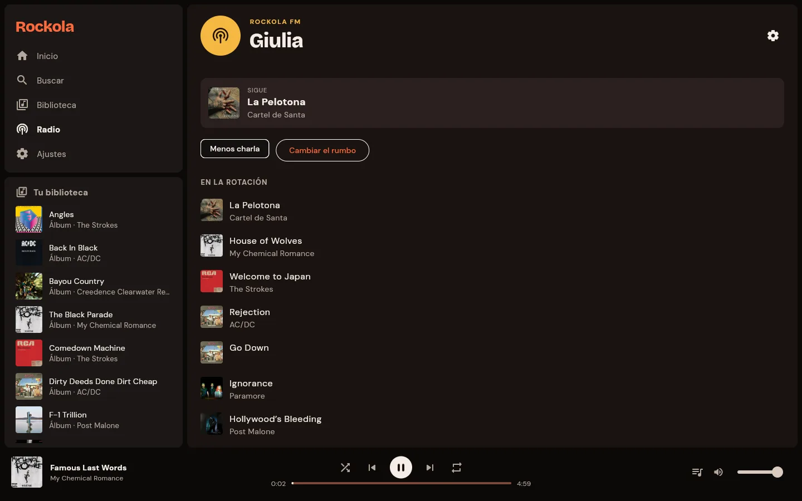
Canta encima
Las letras de Jellyfin si las tiene y, si no, las de lrclib.net. La línea que suena se ilumina y se centra sola, y tocar cualquier otra salta a ese momento de la canción.
En el iPhone, la letra se guarda con la descarga para verla sin conexión.
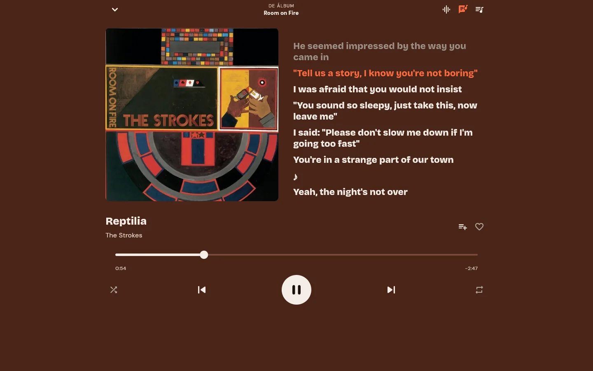
Como el Windows Media Player de XP
Cuatro estilos que siguen la música: Barras, Ambiente, Batería y Ondas. Tocar la pantalla cambia de estilo. Funciona porque cada canción tiene una huella, 16 bandas de frecuencia veinte veces por segundo, que calcula una vez en tu servidor servidor/huellas.py (~70 KB por canción).
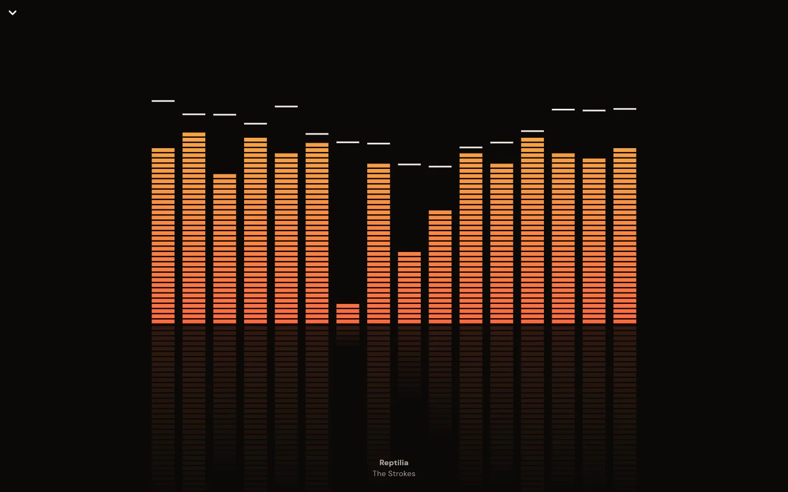
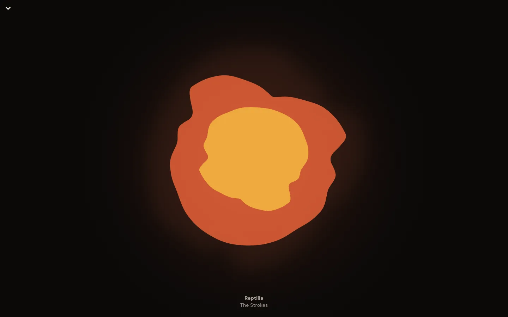
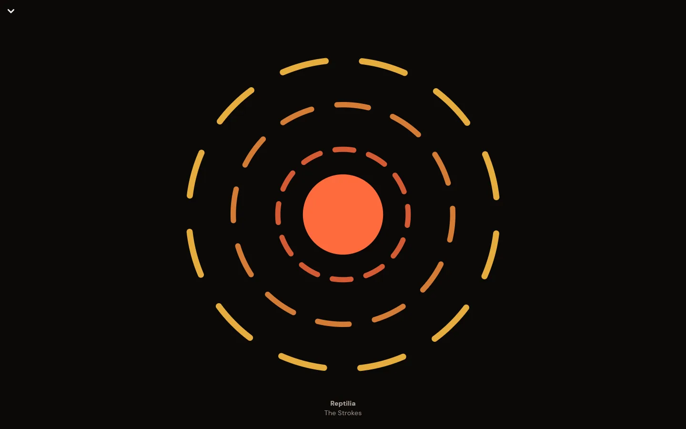
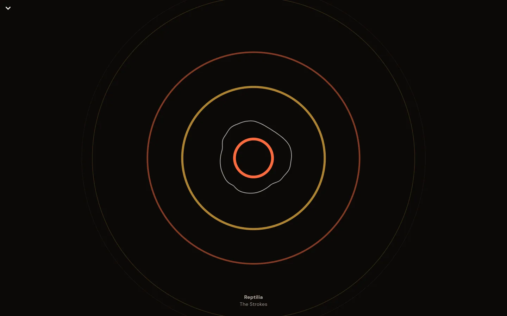
Hecho para el iPhone
La misma app, pensada para una mano. Descarga álbumes y listas comprimidos por Jellyfin a la calidad que elijas (hasta ~4 veces menos espacio), con su portada, su letra y su huella, y escúchalos en modo avión.
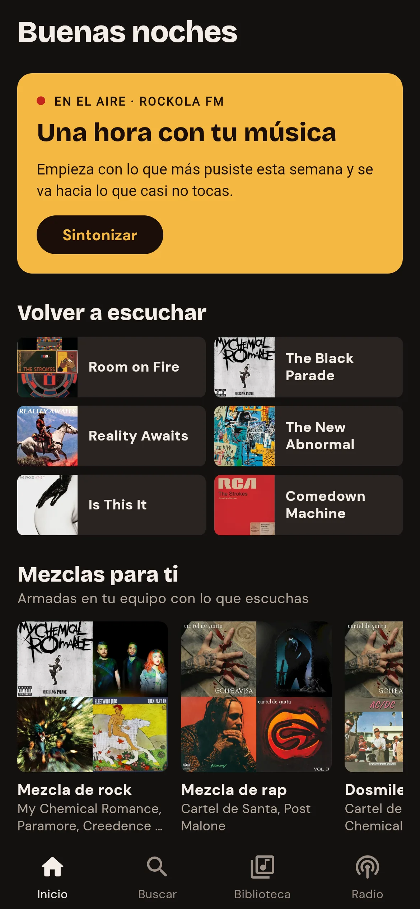
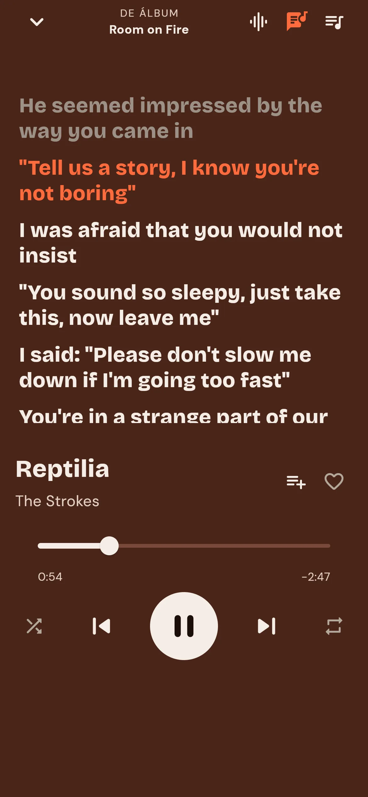
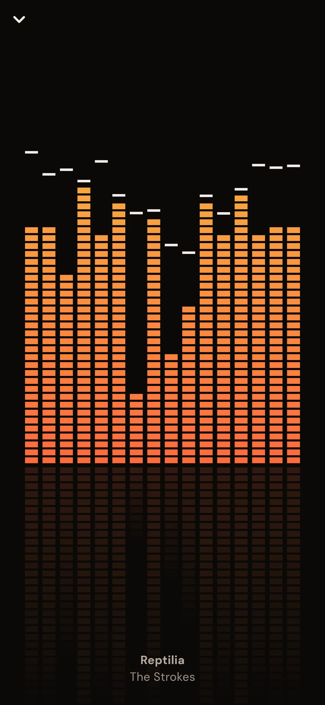
Capturas de la interfaz del teléfono tomadas en el navegador: es la misma app de Flutter que se instala en el iPhone.
Y en la terminal, también
Para equipos donde el navegador pesa demasiado: la misma interfaz en texto, con la radio, la letra y el visualizador en bloques de color. Gasta unos 20 MB y casi nada de CPU; suena por mpv. Todo con el teclado, y con --ascii para consolas viejas.
¿Prefieres ventanas? En Windows también está la app completa, con RockolaSetup.exe: la misma que la web, sin navegador.
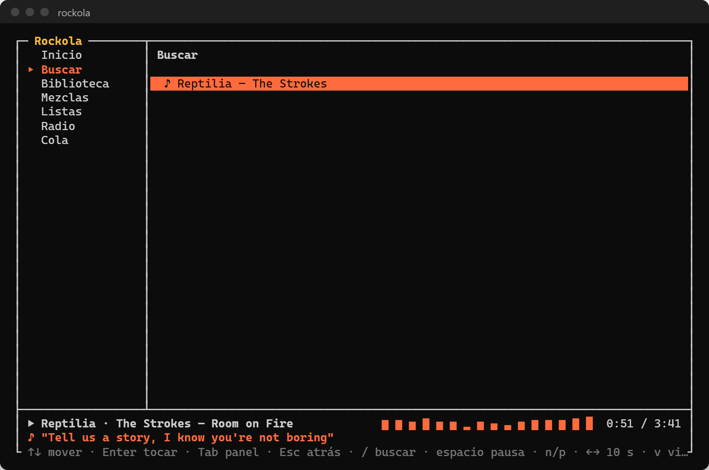
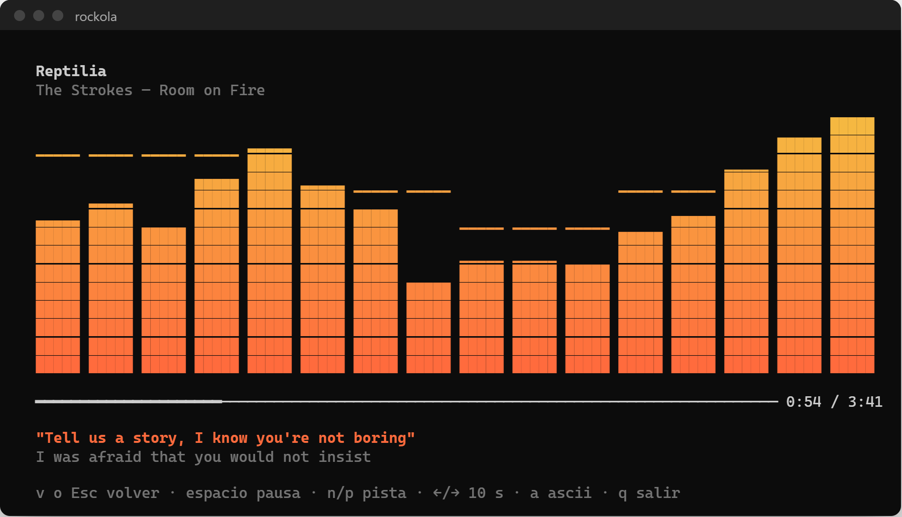
Qué hay en cada una
| iPhone | Windows | Web | Terminal | |
|---|---|---|---|---|
| Biblioteca, álbumes, artistas y búsqueda | ✓ | ✓ | ✓ | ✓ |
| Mezclas del día | ✓ | ✓ | ✓ | ✓ |
| Listas de Jellyfin | ✓ | ✓ | ✓ | tocar |
| Radio con locutora | pronto | ✓ | ✓ | ✓ |
| Letras sincronizadas | ✓ | ✓ | ✓ | ✓ |
| Visualizador | ✓ | ✓ | ✓ | en texto |
| Descargas y modo sin conexión | ✓ | ✓ | — | — |
Solo necesitas tu Jellyfin
Rockola se conecta a tu servidor con tu usuario de siempre. La locutora y el visualizador son opcionales.
Descarga
De la última versión: el instalador para Windows, el IPA para el iPhone (se instala con Sideloadly), la web para servirla donde quieras o la versión de terminal.
Entra
Con la dirección de tu Jellyfin, tu usuario y tu contraseña. En la terminal, en rockola.json.
Suma lo opcional
Un servidor del locutor para que la radio hable y el servidor de huellas para que el visualizador siga la música.